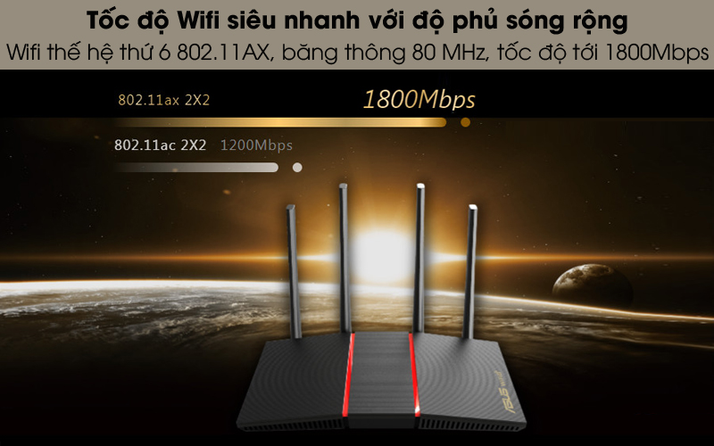

Router Chuẩn Wifi 6 Băng Tần Kép Asus AX55 Đen

Đặc điểm nổi bật
- Hỗ trợ chuẩn WiFi mới nhất 802.11AX (WiFi 6) và băng thông 80 MHz cho dung lượng và hiệu quả tốt hơn.
- Hỗ trợ băng thông 80MHz và 1024-QAM cho tổng tốc độ kết nối không dây lên tới 1800Mbps trên 2 băng tần 2.4GHz và 5GHz.
- Phân bổ hiệu quả các kênh, giao tiếp với nhiều thiết bị cùng lúc với MU-MIMO và kỹ thuật OFDMA.
- Tương thích với hệ thống WiFi ASUS AiMesh để phủ sóng mượt toàn bộ ngôi nhà.
- Công nghệ NitroQAM ™ (1024-QAM) cho phép tốc độ dữ liệu lên mức 25% trong khi tiêu chuẩn cũ bị giới hạn ở 256-QAM.
- Hỗ trợ 4 cổng LAN và 1 cổng WAN kết nối được với nhiều loại thiết bị.
Thông tin chi tiết
Chuẩn Wifi thế hệ thứ 6 802.11ax với tốc độ đường truyền nhanh, mạnh và ổn định, độ phủ sóng rộng
Router Wifi Asus AX55 đạt tốc độ không dây lên tới 574 Mbps trên băng tần 2.4 GHz và 1201 Mbps trên băng tần 5 GHz, băng thông 80 MHz ấn tượng tạo đường truyền mượt mà, ổn định ngay cả khi bạn kết nối đồng thời với nhiều thiết bị sử dụng mạng. So với chuẩn Wifi 802.11ac, Asus AX55 cung cấp đường truyền tốt hơn đến 1.5 lần, giúp bạn thoải mái chơi game online, xem phim trực tuyến, lướt web giải trí vào mọi thời điểm trong ngày.
Kết nối đồng thời với nhiều thiết bị qua 4 cổng LAN và 1 cổng WAN
Công nghệ OFDMA và MU-MIMO giảm độ trễ đầu vào của đường truyền không dây
Khi bạn kết nối nhiều thiết bị cùng lúc với router qua mạng không dây, công nghệ OFDMA và MU-MIMO trên mạng Wifi 6 chia mỗi kênh thành các kênh phụ nhỏ để phát tín hiệu đồng thời, giúp các thiết bị truy cập mạng cùng lúc dễ dàng, giảm độ trễ rõ rệt, tận dụng tối ưu lượng băng thông khả dụng.
Thiết lập thời gian chỉ định phát nhận tín hiệu qua kỹ thuật TWT, giảm tiêu hao pin cho thiết bị kết nối
Các thiết bị sử dụng mạng không dây của bạn không nhận phát dữ liệu liên tục 100%, ứng dụng TWT thiết lập các khoảng thời gian chỉ định để các thiết bị phát nhận dữ liệu, đưa các thiết bị không cần tín hiệu từ router vào trạng thái ngủ, giảm tiêu hao năng lượng hiệu quả lên đến 7 lần so với chuẩn Wifi 802.11ac quen thuộc.
Phủ sóng Wifi đến mọi vị trí trong không gian sống với ASUS AiMesh
ASUS AiMesh giúp liên kết các bộ định tuyến ASUS và hình thành mạng wifi với độ phủ sóng rộng hơn, đường truyền nhanh và ổn định để người dùng truy cập và trải nghiệm hoàn hảo ở mọi vị trí và thời điểm cho mạng không dây từ ASUS Router.
Hỗ trợ cài đặt AiProtection Classic miễn phí trọn đời do Trend Micro™, gia tăng bảo mật
Để bảo vệ hiệu quả hơn cho các thiết bị kết nối và dữ liệu cá nhân của bạn, hãy sử dụng cài đặt AiProtection Classic miễn phí trọn đời do Trend Micro™ cung cấp với chữ ký tự động thường xuyên cập nhật, bảo vệ an ninh mạng tốt hơn. Đồng thời AiProtection Classic cho phép bạn kiểm soát các trang web và trò chơi hay ứng dụng di động cụ thể, quản lý tốt hơn môi trường internet cho trẻ nhỏ.
Thiết bị nhỏ gọn, đẹp mắt, bố trí phù hợp cho mọi không gian
Nhìn chung, router Chuẩn Wifi 6 Băng Tần Kép Asus AX55 đen sẽ là 1 lựa chọn thú vị cho nhu cầu sử dụng internet chất lượng cao ngay tại gia đình hay môi trường doanh nghiệp.
Thông số kỹ thuật Router Wifi Mesh 3 Pack AC1300 TP-Link Deco M5 Trắng
-
Tốc độ:
1201 Mbps (băng tần 5GHz)574 Mbps (băng tần 2.4GHz) -
Băng tần:
2.4GHz5GHz -
Số ăng-ten:
4 Anten ngầm -
Truy cập tối đa:
25 - 30 user -
Mật độ phủ sóng (bán kính):
10 - 20 m -
Các cổng kết nối:
4 x LAN1 x WAN -
Thương hiệu của:
Đài Loan -
Sản xuất tại:
Trung Quốc -
Hãng
Asus